A projectile: two motions, one path
A 79-second visual argument that the curve a thrown ball makes is two simple motions at once: sideways at a constant speed, and up and down under gravity. Each motion is shown alone (a shadow on the ground, a shadow on a pole), the camera orbits so you can look at either one by itself, and then they are put back together. The same two motions, with a different angle or speed, give a different curve. Built with the JS Shell, with exact physics.
1 The idea
Launch a ball with speed v at an angle θ. It has a sideways speed vx = v cos θ and an upward speed vy = v sin θ. Nothing pushes it sideways, so vx never changes: x = vx t. Gravity pulls it down, so vy changes by the same amount every second: y = vy t − ½ g t². Neither formula mentions the other. That is the key lesson: independent components combine into one path.
The 3D advantage. From the side the two motions are tangled. Orbit the path and they come apart: seen from above, along the ground, the ball moves at an even pace and the up-and-down motion vanishes; seen from the pole's side, only the height shows. The film uses two shadows to say the same thing in a picture: an aqua ball that slides along the ground under the real one, and a coral ball that rides a pole beside it.
The units are scene units in slow motion (so that a flight lasts a few seconds): g = 2.5, ball radius 0.25, the ball launched from, and landing on, the ground, with a base speed of 6.32. The numbers the film uses, all computed from the two formulas:
| Launch | vx | vy | Flight | Range | Top |
|---|---|---|---|---|---|
| 45°, speed 1 | 4.47 | 4.47 | 3.58 s | 15.98 | 4.24 |
| 30°, speed 1 | 5.47 | 3.16 | 2.53 s | 13.84 | 2.25 |
| 60°, speed 1 | 3.16 | 5.47 | 4.38 s | 13.84 | 6.24 |
| 45°, speed 0.75 | 3.35 | 3.35 | 2.68 s | 8.99 | 2.50 |
| 45°, speed 1.25 | 5.59 | 5.59 | 4.47 s | 24.96 | 6.49 |
30° and 60° land in the same place because sin 2θ is the same for both, and 45° goes farthest. The plan for the clock, with the times the voice sets (the cues were timed first, and every beat sits on its cue), in seconds:
| Time | What happens |
|---|---|
| 0.8 – 5 | One launch at 45°: a gold trail, and a ring where it lands |
| 5.1 – 10 | The ground line and the pole grow in, named by colour: aqua across, coral up and down |
| 10.3 – 20 | From above: the aqua shadow slides along the ground, a speed arrow stays the same length, aqua beads mark equal steps |
| 20.6 – 34.5 | From the left: the coral shadow rides the pole, its beads get closer near the top, the up arrow shortens to nothing and the down arrow lengthens, a purple gravity arrow never changes: zero at the top |
| 35 – 43 | The orbit, twice round the path, with both shadows live |
| 43.6 – 51.4 | Seven ghost balls, then an arrow triple on each: sideways + up and down = along the curve |
| 51.9 – 64 | Three angles at once; 30° and 60° land on the same ring; 45° goes farthest |
| 64.1 – 70.5 | Three speeds at once: slower and faster, the same curve scaled |
| 70.1 – 76.5 | The orbit again with both shadows, then the lesson |
| 76.5 | Cut to the end card |
2 The palette, a room and a floor
The ten materials of the film are made once, here, and every mesh that uses a colour is handed the same one: aqua is the sideways motion, coral is the up and down, gold is the path, purple is gravity, silver is the ball. A shared material cannot fade one mesh without fading all of them, so this film reveals things by growing them from a scale of 0.001 and removes them by shrinking. The floor has a grid of lines every unit and a heavier one every five, so the equal steps can be counted.
// The palette: every material of the film, made once and handed to every mesh that uses it (ten in all, with the room, the floor and the end card).
// aqua = the sideways motion, coral = the up and down motion, gold = the path they make, purple = gravity, silver = the ball.
const mat = (color, k = 0.4, extra = {}) => new MeshStandardMaterial({ color, emissive: color, emissiveIntensity: k, roughness: 0.5, metalness: 0.1, ...extra });
globalThis.PAL = {
silver: new MeshStandardMaterial({ color: 0xe8ecff, emissive: 0x9aa6ff, emissiveIntensity: 0.3, roughness: 0.3, metalness: 0.25 }),
aqua: mat(0x14e0c8), coral: mat(0xff4d6a), gold: mat(0xffb703, 0.55), purple: mat(0xa78bfa, 0.45),
white: mat(0xffffff, 0.7), grid: mat(0x6a7cf0, 0.55)
};
// a room around the scene and a floor under it, for the shadows to land on
const room = new Mesh(new BoxGeometry(80, 40, 80), new MeshStandardMaterial({ color: 0x2b3680, roughness: 0.95, metalness: 0, side: THREE.BackSide }));
room.name = 'Room';
room.position.set(10, 12, 0);
room.receiveShadow = true;
editor.execute(new AddObjectCommand(editor, room));
const floor = new Mesh(new PlaneGeometry(80, 40), new MeshStandardMaterial({ color: 0x232d70, roughness: 0.9, metalness: 0 }));
floor.name = 'Floor';
floor.rotation.x = -Math.PI / 2;
floor.position.set(10, 0, 0);
floor.receiveShadow = true;
editor.execute(new AddObjectCommand(editor, floor));
// graph paper on the floor: a line every unit along x and z, a heavier one every five
const grid = new Group();
grid.name = 'Grid';
const lineX = new BoxGeometry(1, 1, 1); // one unit cube, stretched per line
for (let x = -5; x <= 30; x++) {
const major = x % 5 === 0;
const m = new Mesh(lineX, PAL.grid);
m.name = 'gridX' + String(x + 5).padStart(2, '0');
m.scale.set(major ? 0.07 : 0.03, 0.02, 14);
m.position.set(x, 0.012, 0);
grid.add(m);
}
for (let z = -7; z <= 7; z++) {
const major = z % 5 === 0;
const m = new Mesh(lineX, PAL.grid);
m.name = 'gridZ' + String(z + 7).padStart(2, '0');
m.scale.set(35, 0.02, major ? 0.07 : 0.03);
m.position.set(12.5, 0.012, z);
grid.add(m);
}
editor.execute(new AddObjectCommand(editor, grid));
// one key light up and in front, so every shadow falls on the floor behind the ball's path; one soft fill
const key = new PointLight(0xfff1dd, 4.5, 0, 0);
key.name = 'KeyLight';
key.position.set(9, 22, 16);
key.castShadow = true;
key.shadow.mapSize.set(2048, 2048);
key.shadow.bias = -0.0004;
key.shadow.intensity = 0.6;
key.shadow.radius = 4;
key.shadow.camera.near = 0.5;
key.shadow.camera.far = 120;
editor.execute(new AddObjectCommand(editor, key));
editor.execute(new AddObjectCommand(editor, Object.assign(new THREE.HemisphereLight(0xdde6ff, 0x6a78c8, 1.2), { name: 'FillLight' })));
grid.children.length // 513 The launcher, the pole and the ground line
The ball starts on the ground, so it also lands on it, which is what makes 30° and 60° land in the same place. The cannon has three barrels (30° and 60° wait at a scale of 0.001 until the angle comparison). The pole and the ground line also start collapsed; each is a group positioned at its foot or its start, so it grows from there.
// The launcher: a base and three barrels on a pivot at ground level (the ball starts on the ground, so it also lands on it),
// the pole that will show the up and down motion alone, and the ground line that will show the sideways motion alone.
// Everything that appears later starts collapsed (scale 0.001) and grows at its moment.
const pivotY = 0.25; // the ball's radius: a ball on the ground has its centre this high
const base = new Mesh(new BoxGeometry(2, 0.5, 1.4), PAL.purple);
base.name = 'CannonBase';
base.position.set(-0.7, 0.25, 0);
base.castShadow = base.receiveShadow = true;
editor.execute(new AddObjectCommand(editor, base));
const barrelGeometry = new CylinderGeometry(0.2, 0.25, 1.4, 24);
barrelGeometry.rotateZ(-Math.PI / 2); // lie along +x ...
barrelGeometry.translate(0.7, 0, 0); // ... starting at the pivot
for (const deg of [30, 45, 60]) {
const barrel = new Group();
barrel.name = 'barrel' + deg;
barrel.position.set(0, pivotY, 0);
barrel.rotation.z = THREE.MathUtils.degToRad(deg);
const tube = new Mesh(barrelGeometry, PAL.silver);
tube.castShadow = true;
tube.name = 'barrelTube' + deg;
barrel.add(tube);
if (deg !== 45) barrel.scale.setScalar(0.001); // the 30 and 60 degree barrels come in for the angle comparison
editor.execute(new AddObjectCommand(editor, barrel));
}
// the pole, 7.6 tall, with a tick every unit: it grows upward from its foot at x = -3
const pole = new Group();
pole.name = 'pole';
pole.position.set(-3, 0, 0);
const rod = new Mesh(new BoxGeometry(0.12, 7.6, 0.12), PAL.coral);
rod.name = 'poleRod';
rod.position.y = 3.8;
pole.add(rod);
const poleTick = new BoxGeometry(0.45, 0.04, 0.04), groundTick = new BoxGeometry(0.04, 0.05, 0.6);
for (let y = 1; y <= 7; y++) {
const tick = new Mesh(poleTick, PAL.white);
tick.name = 'poleTick' + y;
tick.position.y = y;
pole.add(tick);
}
pole.scale.setScalar(0.001);
editor.execute(new AddObjectCommand(editor, pole));
// the ground line, 28 long, with a tick every five: it grows to the right from the cannon
const ground = new Group();
ground.name = 'groundLine';
const bar = new Mesh(new BoxGeometry(28, 0.06, 0.16), PAL.aqua);
bar.name = 'groundBar';
bar.position.set(14, 0.04, 0);
ground.add(bar);
for (let x = 5; x <= 25; x += 5) {
const tick = new Mesh(groundTick, PAL.white);
tick.name = 'groundTick' + x;
tick.position.set(x, 0.05, 0);
ground.add(tick);
}
ground.scale.setScalar(0.001);
editor.execute(new AddObjectCommand(editor, ground));
$S('#barrel30, #barrel45, #barrel60').nodes.length // 34 The physics, written as two tracks
The film's physics is not simulated, it is drawn from the two formulas, each as its own animation. The sideways motion is a linear track. The up and down motion is two eased tracks: the rise slows evenly, which is a quadratic ease-out, and the fall speeds up evenly, which is a quadratic ease-in. Both are exactly parabolas, and both are written as the cubic Bézier that has that shape, cubic-bezier(0.3333,0.6667,0.6667,1) for the rise and cubic-bezier(0.3333,0,0.6667,0.3333) for the fall. A ball is two nested groups (the outer one slides along x, the inner one goes up and down), so each track belongs to a different object and nothing fights.
Every animation is queued with its time (ev) and written in time order at the very end (flush), so no object's track is ever written out of order. The same block makes the arrows that ride on the ball: the aqua one never changes, the coral up arrow shortens evenly to nothing at the top and the down arrow lengthens evenly from nothing, the purple one (gravity) never changes. It also builds the trail, a gold dot every tenth of a second along the exact path, each popping in as the ball reaches it.
// The physics, and the three balls with everything that rides on them.
// A flight is two independent motions: x = vx t (nothing pushes sideways) and y = r + vy t - g t^2 / 2 (gravity pulls down).
// Scene units, in slow motion: g = 2.5, a base speed of 6.32 (so a 45 degree launch has vx = vy = 4.47 and lands 16 away).
const PH = globalThis.PH = { G: 2.5, RAD: 0.25, V: 6.32, K: 0.55, STEP: 0.1 };
PH.flight = (deg, mul = 1) => {
const a = THREE.MathUtils.degToRad(deg), s = PH.V * mul, vx = s * Math.cos(a), vy = s * Math.sin(a), rise = vy / PH.G;
return { vx, vy, rise, time: 2 * rise, range: vx * 2 * rise, top: PH.RAD + vy * vy / (2 * PH.G) };
};
PH.at = (f, t) => [f.vx * t, PH.RAD + f.vy * t - 0.5 * PH.G * t * t]; // where the ball is, t seconds after launch
// the rise slows down evenly (a quadratic ease-out) and the fall speeds up evenly (a quadratic ease-in), written as the cubic Beziers that are exactly those parabolas
PH.RISE = 'cubic-bezier(0.3333,0.6667,0.6667,1)';
PH.FALL = 'cubic-bezier(0.3333,0,0.6667,0.3333)';
// every animation is queued with its time and run in time order at the very end (flush), so no track is ever written out of order
globalThis.EV = [];
globalThis.ev = (t, fn) => EV.push([t, fn, EV.length]);
globalThis.flush = () => { EV.sort((a, b) => a[0] - b[0] || a[2] - b[2]); EV.forEach(([, fn]) => fn()); return EV.length; };
globalThis.grow = (sel, t, to, dur = 500) => ev(t, () => $S(sel).at(t).animate({ to: { scaleX: to, scaleY: to, scaleZ: to } }, dur, to > 0.5 ? 'ease-out' : 'ease-in'));
const add = o => { editor.execute(new AddObjectCommand(editor, o)); return o; };
// a ball is two nested groups, so that x and y are tracks of two different objects: b0 slides along x, b0y (inside it) goes up and down
PH.ball = name => {
const outer = new Group(); outer.name = name; outer.scale.setScalar(0.001);
const inner = new Group(); inner.name = name + 'y'; inner.position.y = PH.RAD;
const m = new Mesh(new SphereGeometry(PH.RAD, 32, 20), PAL.silver);
m.name = name + '_sphere';
m.castShadow = true;
inner.add(m); outer.add(inner);
return [add(outer), inner];
};
const [b0, b0y] = PH.ball('b0');
PH.ball('b1'); PH.ball('b2');
// an arrow: a shaft and a head, pointing up from the ball's centre, starting a little outside it; its length is the shaft's scale
const shaftGeometry = new CylinderGeometry(0.07, 0.07, 1, 12), headGeometry = new ConeGeometry(0.17, 0.4, 16);
const O = 0.3; // the gap between the ball's centre and the start of an arrow
PH.arrow = (name, material, len, parent, rotZ = 0, x = 0) => {
const g = new Group(); g.name = name; g.rotation.z = THREE.MathUtils.degToRad(rotZ); g.position.x = x;
const s = new Mesh(shaftGeometry, material), h = new Mesh(headGeometry, material);
s.name = name + '_s'; h.name = name + '_h';
s.scale.y = Math.max(len - 0.4, 0.001); s.position.y = O + s.scale.y / 2;
h.position.y = O + Math.max(len - 0.4, 0) + 0.2;
g.add(s, h); parent.add(g);
return g;
};
const f45 = PH.flight(45);
const LX = PH.K * f45.vx, LY = PH.K * f45.vy, LG = 1.3; // arrow lengths: sideways speed, up speed, and gravity (which has its own, fixed length)
// sideways: aqua, never changes
const arrX = new Group(); arrX.name = 'arrX'; arrX.scale.setScalar(0.001); b0y.add(arrX);
PH.arrow('arrXa', PAL.aqua, LX, arrX, -90);
// up and down: coral, an up arrow that shortens on the way up and a down arrow that lengthens on the way down
const arrV = new Group(); arrV.name = 'arrV'; arrV.scale.setScalar(0.001); b0y.add(arrV);
PH.arrow('arrU', PAL.coral, LY, arrV, 0);
PH.arrow('arrD', PAL.coral, 0.4, arrV, 180);
$S('#arrD_s, #arrD_h').nodes.forEach(n => n.scale.setScalar(0.001));
// gravity: purple, always the same, always down, to the left of the ball
const arrG = new Group(); arrG.name = 'arrG'; arrG.scale.setScalar(0.001); b0y.add(arrG);
PH.arrow('arrGa', PAL.purple, LG, arrG, 180, -0.6);
PH.LX = LX; PH.LY = LY;
// the two shadows: an aqua one that slides along the ground (only the sideways motion), a coral one that rides the pole (only the up and down)
const sh = (name, x, y, mat, r, sx, sy, sz) => {
const g = new Group(); g.name = name; g.position.set(x, y, 0); g.scale.setScalar(0.001);
const m = new Mesh(new SphereGeometry(r, 24, 16), mat); m.name = name + '_sphere'; m.scale.set(sx, sy, sz); m.castShadow = false;
g.add(m);
return add(g);
};
sh('shX', 0, 0.13, PAL.aqua, PH.RAD, 1.05, 0.5, 1.05);
sh('shY', -3, PH.RAD, PAL.coral, 0.3, 1, 1, 1);
// One launch. `first` skips the shrink-and-jump back to the cannon. `follow` and `arrows` are the things that ride along this time.
// The ball (and its followers) shrink where they landed, jump back to the cannon while hidden, grow there, then fly.
PH.launch = ({ id = 'b0', t0, deg = 45, mul = 1, first = false, follow = [], arrows = [], trail = null, dot = null }) => {
const f = PH.flight(deg, mul), land = t0 + f.time, ball = '#' + id, inner = '#' + id + 'y';
if (!first) {
grow(ball, t0 - 0.85, 0.001, 300);
ev(t0 - 0.5, () => $S(ball).at(t0 - 0.5).animate({ to: { positionX: 0 } }, 50, 'linear'));
}
grow(ball, t0 - 0.4, 1, 350);
ev(t0, () => $S(ball).at(t0).animate({ to: { positionX: f.range } }, f.time * 1000, 'linear'));
ev(t0, () => $S(inner).at(t0).animate({ to: { positionY: f.top } }, f.rise * 1000, PH.RISE));
ev(t0 + f.rise, () => $S(inner).at(t0 + f.rise).animate({ to: { positionY: PH.RAD } }, f.rise * 1000, PH.FALL));
for (const s of follow) {
const sel = '#' + s;
if (s === 'shX') {
ev(t0 - 0.5, () => $S(sel).at(t0 - 0.5).animate({ to: { positionX: 0 } }, 50, 'linear'));
ev(t0, () => $S(sel).at(t0).animate({ to: { positionX: f.range } }, f.time * 1000, 'linear'));
} else {
ev(t0, () => $S(sel).at(t0).animate({ to: { positionY: f.top } }, f.rise * 1000, PH.RISE));
ev(t0 + f.rise, () => $S(sel).at(t0 + f.rise).animate({ to: { positionY: PH.RAD } }, f.rise * 1000, PH.FALL));
}
grow(sel, t0 - 0.4, 1, 350);
grow(sel, land + 0.2, 0.001, 300);
}
for (const a of arrows) {
grow('#' + a, t0 - 0.4, 1, 350);
grow('#' + a, land + 0.2, 0.001, 300);
}
if (arrows.includes('arrV')) {
// the up arrow shortens evenly to nothing at the top, and the down arrow lengthens evenly from nothing: the vertical speed changes by the same amount every second
const lin = (sel, at, dur, to) => ev(at, () => $S(sel).at(at).animate({ to }, dur * 1000, 'linear'));
const up = PH.LY - 0.4, dn = PH.LY - 0.4;
ev(t0 - 0.5, () => {
$S('#arrU_s').at(t0 - 0.5).animate({ to: { scaleY: up, positionY: O + up / 2 } }, 50, 'linear');
$S('#arrU_h').at(t0 - 0.5).animate({ to: { positionY: O + up + 0.2, scaleX: 1, scaleY: 1, scaleZ: 1 } }, 50, 'linear');
$S('#arrD_s').at(t0 - 0.5).animate({ to: { scaleY: 0.001, positionY: O } }, 50, 'linear');
$S('#arrD_h').at(t0 - 0.5).animate({ to: { positionY: O + 0.2, scaleX: 0.001, scaleY: 0.001, scaleZ: 0.001 } }, 50, 'linear');
});
lin('#arrU_s', t0, f.rise, { scaleY: 0.001, positionY: O });
lin('#arrU_h', t0, f.rise, { positionY: O + 0.2 });
ev(t0 + f.rise - 0.3, () => $S('#arrU_h').at(t0 + f.rise - 0.3).animate({ to: { scaleX: 0.001, scaleY: 0.001, scaleZ: 0.001 } }, 300, 'linear'));
lin('#arrD_s', t0 + f.rise, f.rise, { scaleY: dn, positionY: O + dn / 2 });
lin('#arrD_h', t0 + f.rise, f.rise, { positionY: O + dn + 0.2 });
ev(t0 + f.rise, () => $S('#arrD_h').at(t0 + f.rise).animate({ to: { scaleX: 1, scaleY: 1, scaleZ: 1 } }, 300, 'linear'));
}
if (trail) PH.trail(trail, dot || PAL.gold, t0, f);
return f;
};
// the trail: a gold dot every tenth of a second along the exact path, each popping in as the ball reaches it; one group per path, so a whole path can be collapsed
PH.dotGeometry = new SphereGeometry(0.09, 12, 8);
PH.trail = (name, material, t0, f) => {
const g = new Group(); g.name = name;
const n = Math.floor(f.time / PH.STEP + 1e-9);
for (let k = 1; k <= n + 1; k++) {
const t = Math.min(k * PH.STEP, f.time), [x, y] = PH.at(f, t);
const d = new Mesh(PH.dotGeometry, material);
d.name = name + '_' + String(k).padStart(2, '0');
d.position.set(x, y, 0); d.scale.setScalar(0.001);
g.add(d);
ev(t0 + t, () => $S('#' + d.name).at(t0 + t).animate({ to: { scaleX: 1, scaleY: 1, scaleZ: 1 } }, 150, 'ease-out'));
}
add(g);
return g;
};
`${$S('#b0, #b1, #b2').nodes.length} balls, ${$S('#arrU_s, #arrD_s, #arrXa_s, #arrGa_s').nodes.length} shafts`5 Eight cameras
One camera per idea: a side view, one from above for the sideways motion, one from the left for the pole, an orbit (azimuth −78° to +70°), a head-on view for the ghosts, a wide one for the angles and speeds, a second orbit, and the end card. The orbit() helper takes a centre, so the camera circles the path rather than the origin. The block ends by putting the cuts in order.
// eight cameras, one per idea: the side view, from above (the sideways motion), from the left (the up and down), an orbit round the path,
// a head-on view for the ghosts, a wide one for the three angles and speeds, a second orbit, and the end card
function addCamera(name, fov) {
const cam = new THREE.PerspectiveCamera(fov, 16 / 9, 0.1, 400);
cam.name = name;
editor.execute(new AddObjectCommand(editor, cam));
return cam;
}
// a move around a centre: azimuth in degrees (0 = straight in front, looking along -z), a radius and a height, one key every `step` seconds
globalThis.orbit = (cam, t0, t1, az0, az1, radius, y0, y1, aim, step = 4, center = [0, 0, 0]) => {
const n = Math.max(1, Math.round((t1 - t0) / step));
const keys = [];
for (let i = 0; i <= n; i++) {
const u = i / n, az = THREE.MathUtils.degToRad(az0 + (az1 - az0) * u);
keys.push({ t: t0 + (t1 - t0) * u, pos: [center[0] + radius * Math.sin(az), y0 + (y1 - y0) * u, center[2] + radius * Math.cos(az)], lookAt: aim });
}
$S('#' + cam.name).setKeys(keys, { smooth: true });
cam.position.set(...keys[0].pos); // where the camera waits before its move starts
cam.lookAt(...aim);
};
const camA = addCamera('camA', 40), camTop = addCamera('camTop', 40), camPole = addCamera('camPole', 40), camOrbit = addCamera('camOrbit', 40);
const camGhost = addCamera('camGhost', 40), camCompare = addCamera('camCompare', 40), camOrbit2 = addCamera('camOrbit2', 40), end = addCamera('camCard', 50);
orbit(camA, 0.001, 10.0, -6, 6, 25, 4.5, 5, [8, 3, 0], 5, [8, 0, 0]);
orbit(camTop, 10.0, 20.3, -10, 10, 15, 21, 20, [8, 0, 0], 5, [8, 0, 0]);
orbit(camPole, 20.3, 34.7, -52, -30, 22, 6, 7, [3, 3.5, 0], 5, [2, 0, 0]);
orbit(camOrbit, 34.7, 43.3, -78, 70, 27, 7, 10, [8, 2, 0], 3, [8, 0, 0]);
orbit(camGhost, 43.3, 51.6, -8, 8, 24, 6.5, 6.5, [8, 3.2, 0], 4, [8, 0, 0]);
orbit(camCompare, 51.6, 70.5, -6, 6, 31, 8, 9, [12, 3, 0], 6, [12, 0, 0]);
orbit(camOrbit2, 70.5, 76.5, 60, -30, 28, 8, 8, [8, 2, 0], 3, [8, 0, 0]);
end.position.set(33.4, 8, 0); // faces the end card, which hangs on the far wall
end.lookAt(48, 8, 0);
const cams = Object.fromEntries(['camA', 'camTop', 'camPole', 'camOrbit', 'camGhost', 'camCompare', 'camOrbit2', 'camCard'].map(n => [n, $S('#' + n).nodes[0]]));
const cuts = [[0, 'camA'], [10.0, 'camTop'], [20.3, 'camPole'], [34.7, 'camOrbit'], [43.3, 'camGhost'], [51.6, 'camCompare'], [70.5, 'camOrbit2'], [76.5, 'camCard']];
editor.scene.userData.renderShots = cuts.map(([at, name], i) => ({
id: 'shot-' + name, at, camera: cams[name].uuid, transition: i === 0 ? 'cut' : 'fade', transitionDur: 0.6
}));
editor.work.touch();
editor.scene.userData.renderShots.length // 86 The labels
Click the Text stencil (Stencils tab) once, and then paste this. Every label is a copy of that stencil, left-aligned; widths come from the font. Two of them have a twist: the equal steps label lies flat on the floor, so it reads from above, and the gravity label is a child of the gravity arrow, so it travels with it. The words are shown and cleared in step 10.
// every label is a copy of the one Text stencil, so they share its font; they share a material per colour too, so each label cuts in (and out)
// rather than fading, because a shared material cannot fade one label without fading them all. A label's text begins at its own origin, left-aligned:
// widths come from the font (units of the font size, at scale 1), so a label is centred by subtracting half its width.
const tpl = $S('#Text').nodes[0];
let first = true;
globalThis.label = (name, material, x, y, z, scale, opt = {}) => {
const m = first ? tpl : new Mesh(tpl.geometry.clone(), material);
m.name = name;
m.material = material;
m.scale.setScalar(scale);
m.position.set(x, y, z);
m.rotation.set(opt.rx || 0, opt.ry || 0, 0);
m.userData.textShadow = true;
m.castShadow = false;
if (opt.parent) opt.parent.add(m); else if (!first) editor.execute(new AddObjectCommand(editor, m));
first = false;
ev(0, () => $S('#' + name).at(0).change(''));
return m;
};
// show a label's text at one time and clear it at another
globalThis.say = (name, text, from, to) => {
ev(from, () => $S('#' + name).at(from).change(text));
ev(to, () => $S('#' + name).at(to).change(''));
};
// camera A (the first cue): where it lands
label('lnd', PAL.white, 14.1, 1.3, 0.3, 0.8);
// cue 2: the two kinds of motion, named by their colour
label('acr', PAL.aqua, 10.7, 0.5, 1.4, 0.8);
label('ud', PAL.coral, -8.2, 6.9, 0, 0.75);
// cue 3, seen from above: lying on the floor in front of the ground line
label('eq', PAL.aqua, 4, 0.06, 3.4, 1.0, { rx: -Math.PI / 2 });
// cue 4: beside the gravity arrow, so it travels with it; turned toward the left-hand camera
label('grav', PAL.purple, -3.4, -1.1, 0, 0.55, { ry: -0.65, parent: $S('#arrG').nodes[0] });
// cue 5: over the top of the path
label('zero', PAL.coral, 4.6, 5.3, 0, 0.7, { ry: -0.65 });
// cue 8: each angle over the top of its own path
label('a30', PAL.white, 5.95, 2.7, 0, 0.9);
label('a45', PAL.white, 7.05, 4.7, 0, 0.9);
label('a60', PAL.white, 5.95, 6.7, 0, 0.9);
// cues 9 and 10: at the landing marks, in front of them
label('same', PAL.white, 9.8, 0.35, 3.2, 1.1);
label('slow', PAL.white, 6.5, 0.35, 3.2, 1.1);
label('fast', PAL.white, 22.8, 0.35, 3.2, 1.1);
$S('#lnd, #acr, #ud, #eq, #grav, #zero, #a30, #a45, #a60, #same, #slow, #fast').nodes.length // 127 The end card
Click the Call card stencil, then paste. It is hung on the far wall, facing the last camera.
// the end card: the Call card stencil, landscape, hung on the far wall and facing the end camera
const card = $S('#callcard').nodes[0];
card.userData.width = 3.2;
card.userData.height = 1.8;
card.geometry = new PlaneGeometry(3.2, 1.8);
$S('#callcard').moveTo(48, 8, 0).scaleTo(8);
card.rotation.set(0, -Math.PI / 2, 0);
card.material.opacity = 0;8 The launches
Every flight of the film, in one place. A launch shrinks the ball where it landed, hides the jump back to the cannon, and grows it there, so the ball never slides back. follow names the shadows that ride along and arrows the arrows. The ball b0 is always the 45° ball; b1 and b2 join it for the angles and the speeds.
// the launch schedule: every flight of the film. b0 is always the 45 degree ball; b1 and b2 join for the angles and the speeds.
const ALL = ['arrX', 'arrV', 'arrG'];
PH.launch({ t0: 1.1, first: true, trail: 'trail45' }); // cue 1: one launch, one curve
PH.launch({ t0: 11.2, follow: ['shX'], arrows: ['arrX'] }); // cue 3: the sideways motion alone
PH.launch({ t0: 16.0, follow: ['shX'], arrows: ['arrX'] });
PH.launch({ t0: 21.3, follow: ['shY'], arrows: ALL }); // cue 4: the up and down motion, and gravity
PH.launch({ t0: 28.55, follow: ['shY'], arrows: ALL }); // cue 5: slows, stops, speeds up
PH.launch({ t0: 35.1, follow: ['shX', 'shY'] }); // cue 6: the orbit, both shadows
PH.launch({ t0: 39.55, follow: ['shX', 'shY'] });
PH.launch({ t0: 44.15 }); // cue 7: put them back together (the ghosts)
// cue 8: three angles at once (the barrels for 30 and 60 come in just before)
PH.launch({ id: 'b1', t0: 52.8, deg: 30, first: true, trail: 'trail30' });
PH.launch({ t0: 52.8 });
PH.launch({ id: 'b2', t0: 52.8, deg: 60, first: true, trail: 'trail60' });
// cue 10: three speeds at once, all at 45 degrees
PH.launch({ id: 'b1', t0: 64.9, mul: 0.75, trail: 'trailSlow' });
PH.launch({ t0: 64.9 });
PH.launch({ id: 'b2', t0: 64.9, mul: 1.25, trail: 'trailFast' });
// cue 11: the orbit again, both shadows live
PH.launch({ t0: 70.9, follow: ['shX', 'shY'] });
EV.length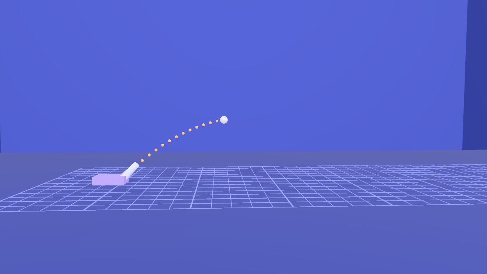
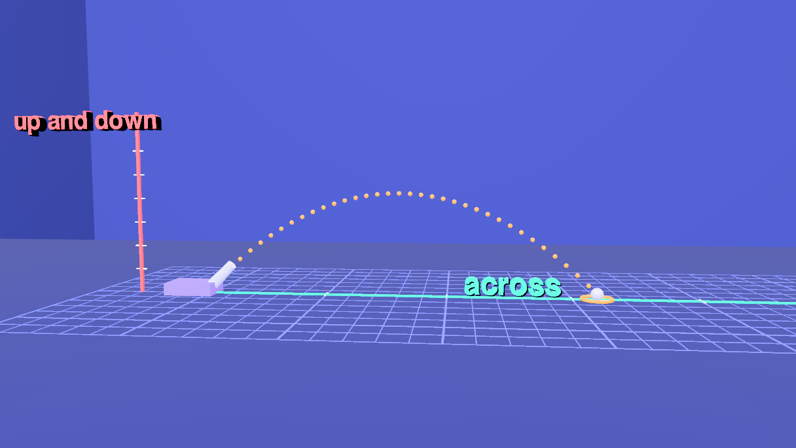
9 Rings, beads and ghosts
The marks the film leaves behind. A gold ring where each flight lands. An aqua bead on the ground for every 0.45 s of flight (equal steps) and a coral bead on the pole (steps that shrink toward the top and grow again). And seven ghost balls, each with a line down to the ground and an arrow triple: the aqua sideways arrow, the coral up-or-down arrow, and the gold arrow along the curve, the third being the sum of the other two.
// the marks left behind: landing rings, the beads each shadow leaves (equal steps along the ground, unequal steps up the pole), and the ghost balls with their arrows
const add = o => { editor.execute(new AddObjectCommand(editor, o)); return o; };
const f45 = PH.flight(45), DT = 0.45;
// landing rings, flat on the ground, popping in as the ball comes down
const ringGeometry = new TorusGeometry(0.6, 0.07, 8, 40);
const ring = (name, x, at) => {
const g = new Group(); g.name = name; g.position.set(x, 0.06, 0); g.scale.setScalar(0.001);
const m = new Mesh(ringGeometry, PAL.gold); m.name = name + '_torus'; m.rotation.x = -Math.PI / 2;
g.add(m); add(g);
grow('#' + name, at, 1, 400);
};
const f30 = PH.flight(30), fs = PH.flight(45, 0.75), ff = PH.flight(45, 1.25);
ring('ring45', f45.range, 1.1 + f45.time);
ring('ring3060', f30.range, 52.8 + f30.time);
ring('ringSlow', fs.range, 64.9 + fs.time);
ring('ringFast', ff.range, 64.9 + ff.time);
// seven ghosts, every 0.45 s of flight; a bead on the ground under each, a bead on the pole beside each, and a ghost ball with its three arrows
const ghostGeometry = new SphereGeometry(PH.RAD, 24, 16), bead = new SphereGeometry(0.15, 16, 12), dropGeometry = new BoxGeometry(0.04, 1, 0.04), K = 0.35;
for (let k = 1; k <= 7; k++) {
const t = DT * k, [x, y] = PH.at(f45, t), vy = f45.vy - PH.G * t;
const bx = new Mesh(bead, PAL.aqua); bx.name = 'tx_' + k; bx.position.set(x, 0.1, 0.12); bx.scale.setScalar(0.001); add(bx);
const by = new Mesh(bead, PAL.coral); by.name = 'ty_' + k; by.position.set(-3, y, 0.12); by.scale.setScalar(0.001); add(by);
grow('#tx_' + k, 11.2 + t, 1, 200); // as the ball passes, in cue 3
grow('#ty_' + k, 21.3 + t, 1, 200); // as the ball passes, in cue 4
grow('#tx_' + k, 51.925, 0.001, 500);
grow('#ty_' + k, 51.925, 0.001, 500);
const gh = new Group(); gh.name = 'gh_' + k; gh.position.set(x, y, 0); gh.scale.setScalar(0.001);
const ball = new Mesh(ghostGeometry, PAL.silver); ball.name = 'gh_' + k + '_ball'; ball.castShadow = true; gh.add(ball);
const drop = new Mesh(dropGeometry, PAL.white); drop.name = 'gh_' + k + '_drop'; drop.scale.y = y; drop.position.y = -y / 2; gh.add(drop);
const ga = new Group(); ga.name = 'ga_' + k; ga.scale.setScalar(0.001); gh.add(ga);
PH.arrow('gx_' + k, PAL.aqua, K * f45.vx, ga, -90);
if (Math.abs(vy) > 0.5) PH.arrow('gy_' + k, PAL.coral, K * Math.abs(vy), ga, vy > 0 ? 0 : 180);
PH.arrow('gr_' + k, PAL.gold, K * Math.hypot(f45.vx, vy), ga, -THREE.MathUtils.radToDeg(Math.atan2(f45.vx, vy)));
add(gh);
grow('#gh_' + k, 44.15 + t, 1, 250); // the ghost appears as the ball passes
grow('#ga_' + k, 48.0 + 0.4 * (k - 1), 1, 350); // then its arrows, one ghost at a time
grow('#gh_' + k, 51.925, 0.001, 500);
}
// the pole and the ground line: in cue 2, gone for the angles and speeds, back for the last orbit
grow('#groundLine', 6.4, 1, 800);
grow('#pole', 7.8, 1, 800);
grow('#groundLine', 51.925, 0.001, 500);
grow('#pole', 51.925, 0.001, 500);
grow('#groundLine', 70.4, 1, 700);
grow('#pole', 70.4, 1, 700);
// the barrels for 30 and 60 degrees, only for cue 8 and 9
for (const b of ['#barrel30', '#barrel60']) { grow(b, 52.0, 1, 600); grow(b, 64.0, 0.001, 500); }
// the 30 and 60 degree paths go before the speeds come in
for (const b of ['#trail30', '#trail60', '#ring3060']) grow(b, 64.0, 0.001, 600);
$S('#ring45, #ring3060, #ringSlow, #ringFast, #gh_7, #tx_7, #ty_7').nodes.length // 7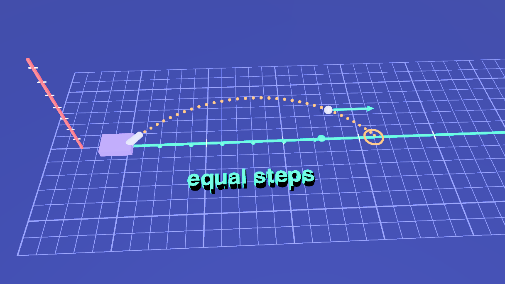
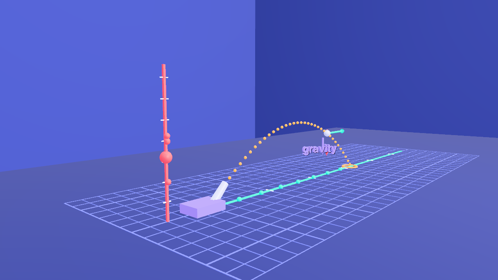
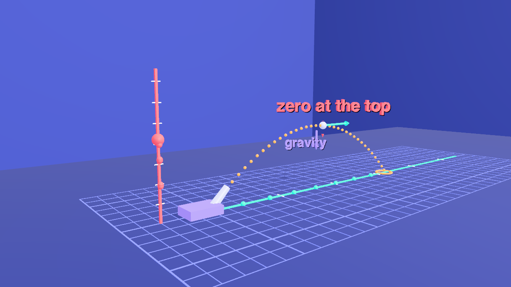
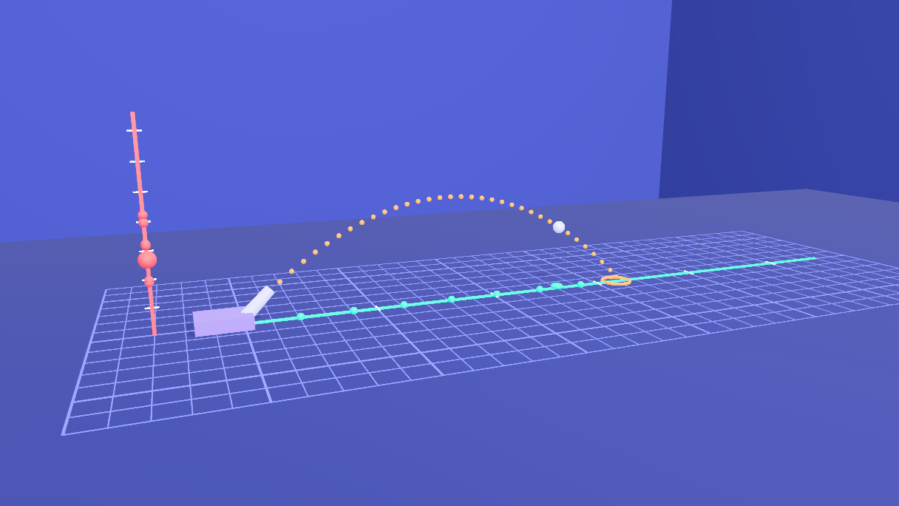
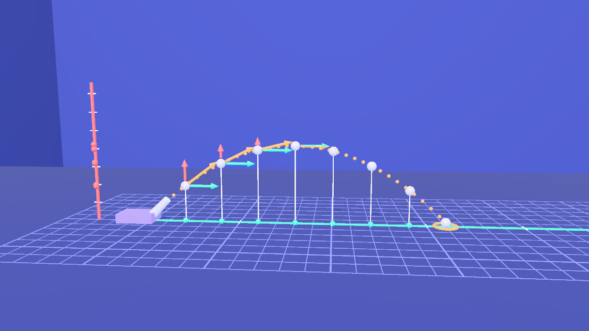
10 The words
Each label's text is set at its cue and cleared when it has done its job. Every label has one change track, so a text never fights another.
// the words on the screen, in the order the voice says them
say('lnd', 'landing', 4.9, 6.4);
say('acr', 'across', 6.5, 10.0);
say('ud', 'up and down', 7.9, 10.0);
say('eq', 'equal steps', 12.6, 20.0);
say('grav', 'gravity', 21.8, 34.5);
say('zero', 'zero at the top', 30.0, 33.6);
say('a30', '30°', 52.4, 56.8);
say('a45', '45°', 52.4, 56.8);
say('a60', '60°', 52.4, 56.8);
say('same', '30° and 60°', 57.0, 63.9);
say('slow', 'slower', 67.6, 70.4);
say('fast', 'faster', 69.4, 70.4);
// the end card fades in as the last camera arrives
ev(76.7, () => $S('#callcard').at(76.7).fadeIn(2.0));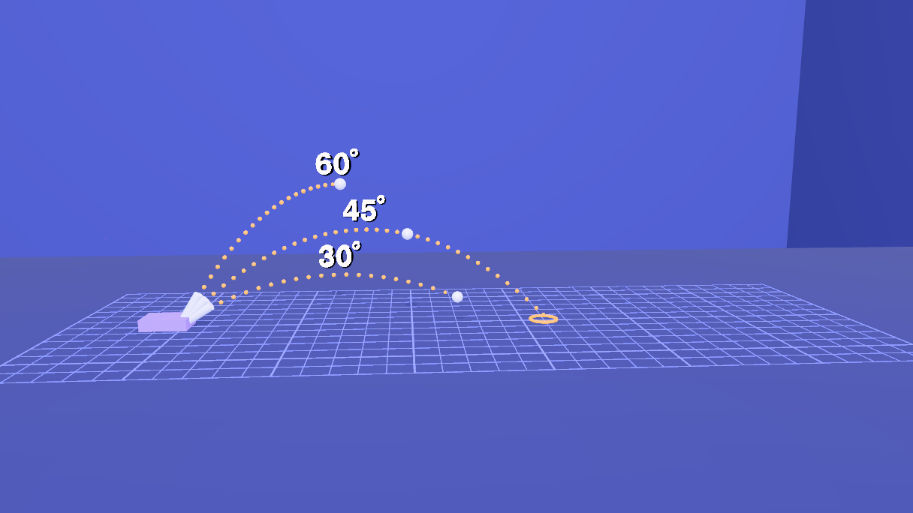
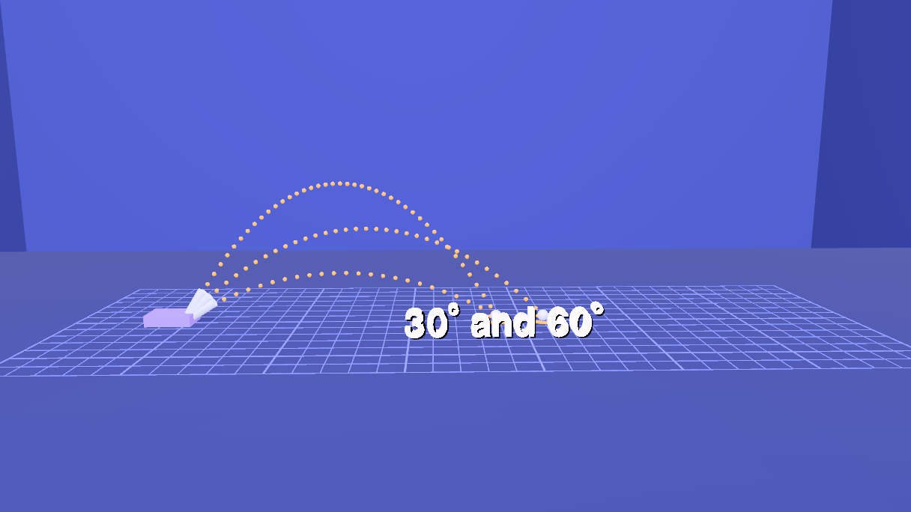
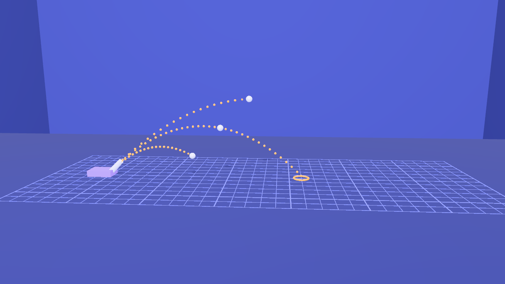
11 Subtitles
Twelve cues, kept on the scene (scene.userData.renderSubtitles) like the other shorts. The cues were run through a speech synthesizer (Kokoro, af_sarah) and each cue gets its measured length plus 0.3 seconds, with a gap before the next, so no two ever overlap.
setSubtitles([
{ start: 0.8, end: 4.65, text: 'Launch a ball at an angle,\nand it flies in a curve.' },
{ start: 5.1, end: 9.85, text: 'That one curve is really two simple\nmotions, happening at once.' },
{ start: 10.3, end: 20.125, text: 'Across the ground, nothing pushes the ball sideways, so its\nhorizontal speed never changes. Equal steps, in equal times.' },
{ start: 20.575, end: 27.7, text: 'Up and down, gravity pulls on the ball, so its vertical\nspeed changes by the same amount every second.' },
{ start: 28.15, end: 34.5, text: 'It slows on the way up, stops for an instant at\nthe top, then speeds up on the way down.' },
{ start: 34.95, end: 43.1, text: 'Now orbit the path. The ground sees only the sideways\nmotion, and the pole sees only the up and down.' },
{ start: 43.55, end: 51.475, text: 'Put the two back together: at every moment, a sideways step\nplus an up and down step makes one step along the curve.' },
{ start: 51.925, end: 56.525, text: 'Change the angle, and the same two\nmotions make a different curve.' },
{ start: 56.975, end: 63.675, text: 'Thirty and sixty degrees land in the same\nplace. Forty-five degrees goes farthest.' },
{ start: 64.125, end: 69.65, text: 'Change the speed, and the whole curve\nscales: faster means higher and farther.' },
{ start: 70.1, end: 76.4, text: 'Independent components combine into\none path. That is the whole idea.' },
{ start: 76.85, end: 79.05, text: 'Made with Strata.' },
]).length // 1212 Write the animation
One last block. Every animation queued above is written now, in time order.
// every animation of the film is written now, in time order
flush()13 Name and class everything
The film is only addressable if every object has a name an author chose and at least one class: otherwise $S('#b0'), $S('.trail-dot'), an AI edit or a tutorial step cannot reach it. Every object was named where it was created (a grid line is gridX07, a tick on the pole poleTick3, the ball inside b0 is b0_sphere: one template string in the loop that makes them), so this last block only adds the classes, from one table, and then calls requireLabels(true). That marks the scene: from now on a commit is refused while any object is unnamed, duplicated or without a class, and lint() lists what is wrong. Objects the engine makes itself (the dark shadow of each text label, whose names start with __) are exempt.
// Every object has a name (set where it is created) and now a class. Classes are what make the scene queryable: $S('.arrow'), $S('.trail-dot'), $S('.sideways').
// One table, first column the names it covers, second the classes it gives; an object can match several rows. Anything left without a class is listed and the block stops.
const rules = [
[/^(Room|Floor)$/, ['environment']], [/^(Grid|grid[XZ]\d+)$/, ['environment', 'grid']], [/Light$/, ['light']],
[/^(CannonBase|barrel\d+|barrelTube\d+)$/, ['cannon']], [/^barrel\d+$/, ['barrel']],
[/^(pole|poleRod|poleTick\d+)$/, ['pole']], [/^(groundLine|groundBar|groundTick\d+)$/, ['ground-line']],
[/^b[012](y|_sphere)?$/, ['ball']],
[/^(arr[XVGUD]|gx_|gy_|gr_)/, ['arrow']], [/^(arrX|gx_)/, ['sideways']], [/^(arrV|arrU|arrD|gy_)/, ['vertical']], [/^arrG/, ['gravity']], [/^gr_/, ['resultant']],
[/^sh[XY]/, ['shadow']], [/^shX/, ['sideways']], [/^shY/, ['vertical']],
[/^trail\w+$/, ['trail']], [/^trail\w+_\d+$/, ['trail-dot']],
[/^ring/, ['landing-ring']], [/^(gh_|ga_)/, ['ghost']], [/^t[xy]_\d+$/, ['bead']],
[/^(lnd|acr|ud|eq|grav|zero|a30|a45|a60|same|slow|fast)$/, ['label']],
[/^cam/, ['camera']], [/^callcard$/, ['card']]
];
const left = [];
scene.traverse(o => {
if (o === scene || o.name.startsWith('__')) return;
const add = rules.filter(([re]) => re.test(o.name)).flatMap(([, c]) => c);
if (add.length === 0) { left.push(o.name || '(unnamed)'); return; }
o.userData.customClasses = [...new Set([...(o.userData.customClasses || []), ...add])];
});
if (left.length) throw new Error(left.length + ' objects have no class: ' + left.slice(0, 12).join(', '));
requireLabels(true) // from here on a commit is refused while anything is unnamed, duplicated or classless14 The narration
The twelve subtitle cues were written to be read aloud. A voice track made from them with dub.webcli.app (every cue placed at its start time in one WAV, voice af_sarah, 79 s, no cue overlaps another) is committed beside the scene as audio/projectile.wav, and this one-line block tells the scene to carry it: the path is relative to the scene file's folder in the repo. When the render is published (Render tab, Publish), the track is encoded once as AAC and every video rung references it through an HLS audio group.
// The narration the published render carries: the voice track made from the subtitles (a WAV with every cue at its start time, from dub.webcli.app),
// stored in the repo beside the scene. The path is relative to the scene file's folder.
setRenderAudio('audio/projectile.wav', { language: 'en', label: 'English' })15 Render it
- Open the Render tab and its Video sub-tab. The Camera Sequence already holds the eight shots from step 5.
- Choose Render (offline), 1920 × 1080 at 60 fps, and click Render. Every frame is drawn and captured at its exact timeline time, so the result is the same on a fast or a slow machine. Tick Hard-burn to draw the subtitles into the picture, and keep Also export a matching .srt.
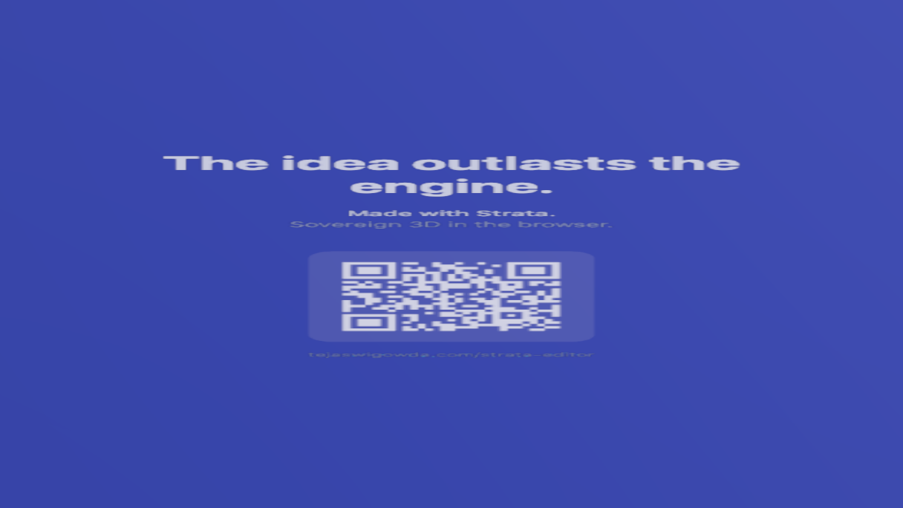
16 Open the scene file
The scene is projectile.json in tejaswigowda/test1. It is the scene file, not a still: the timeline, the camera sequence and the subtitles are saved inside it, so opening it plays the film without any script, and the blocks on this page are how it was authored. Scrub the Animations tab: at 3 s the first launch, at 24 s the pole, at 49 s the ghosts, at 55 s three angles, at 67 s three speeds, and from 76.5 s the card fills the frame.
@3bd6749), which never goes stale; the link in this step reads the branch head. When the scene is republished, move the commit in the player's address.lint() reports nothing, and the scene is marked with requireLabels), 251 timeline tracks, 8 shots and 12 cues. The ball's position was read back at 35 moments across five flights (30°, 45° and 60° at speed 1, and 45° at speeds 0.75 and 1.25) and compared with x = vx t and y = 0.25 + vy t − ½ g t²: the largest difference was 0.002 scene units. The screenshots are frames of the pasted scene at 2.6, 9, 14, 24, 30.5, 38, 49.5, 55, 58.5, 67 and 78 s, with the editor's controls hidden. Rendering to a video file (step 15) was not run for this page. The film shows exact physics for an ideal projectile, with no air resistance, in slow motion; the ghost arrows are drawn at a smaller scale than the arrows on the ball, so they do not overlap.renders/projectile in tejaswigowda/test1): 1280 × 720 at 30 fps, video only, made before the narration of step 14 existed. A 1080p60 render with the narration has to be made and published again. Addressable: every object in the scene file has a name and at least one class, and the scene is marked with requireLabels, so a commit with an unnamed, duplicated or classless object is refused; lint() in the Shell lists any.